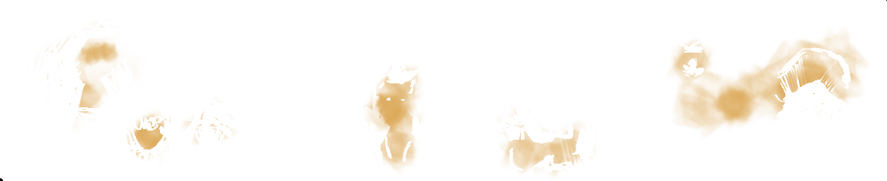
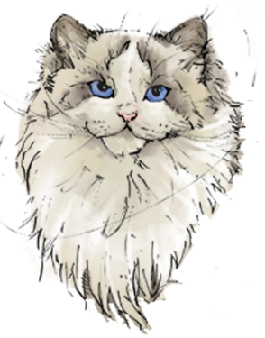
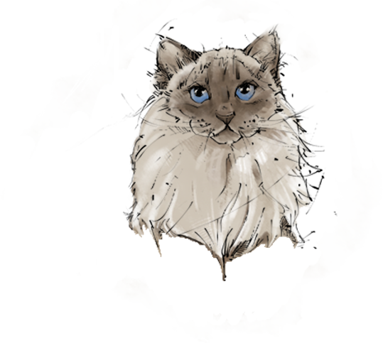
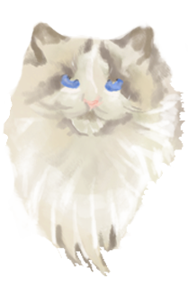
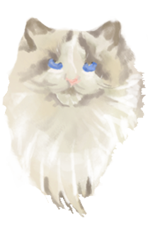

Ragdolls are listed amongst the younger siblings of the cat family. These cats were developed by Ann Baker in 1960s in California. The founding longhaired domestic cat was called Josephine and had white coat but had genes for other patterns too due to its unknown ancestry. For her breeding program, Baker selected large, placid cats from her neighborhood that particularly displayed the Himalayan pattern or were pointed like the Siamese cats. The resulting cat was called Ragdoll as it flopped happily in the arms of people. Later on, other cat breeds such as Burmese, Birmans and Persians were also added to the flock. Ragdolls are not outcrossed to any other breed.

The bicolor Ragdoll is a sought after color pattern and is one of the three accepted color patterns of the Ragdoll Cat breed. When looking at show quality, there are two ideal marking patterns: Minimal white and maximum white.

Mask, ears, legs, paws and tail are colored in one of the varieties mentioned below. The body is a little bit lighter than the Point color. Collar and bib are even lighter. Nose and paw pads have different colors in each variety.

Point colored masked, ears and legs with white mittens on the front feet and white boots on the back legs. The chin, ruff and stomach are white.
 
